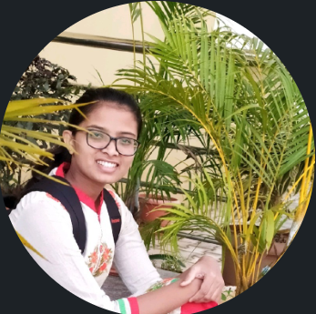

| 
|
I am a pre-final year Engineering Student and an Enthusiastic learner who is Interested in
solving problems related to real word by applying the skills and knowledge that I have gain
through my degree. I like to continue my career in Java and Web development where I am keen
interested in also, I am influenced by Machine learning for some extent.
I am a
self-learner and I always prefer to understand the things rather than briefing out through
the topics
|